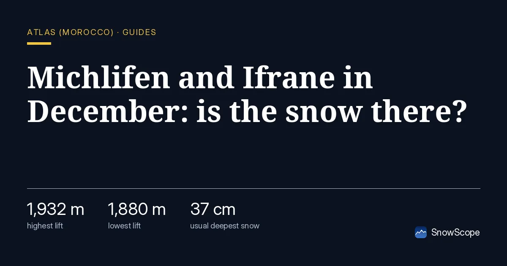
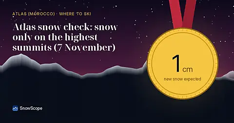

Michlifen and Ifrane in December: is the snow there?
In 46 winters of records, Michlifen in mid-December usually has no skiing snow. Only in rare years does snow stay on the ground long enough to matter. This is a resort for storm-chasers, not for planning a week ahead.
See the live snow forecast for Michlifen ski resort in the SnowScope appSnow depth, powder alerts and the 3D map, free.
Why Michlifen struggles in December
Michlifen sits in Morocco's Middle Atlas at a low altitude for a ski area: the base is at 1870 m, mid-mountain at 1970 m, and the top at 2070 m. Just 13 km away, Ifrane often sits under picturesque snow cover, but Michlifen's slopes tell a different story. The mountains here catch snow often but lose it quickly to melt and wind.
Height matters less in the Atlas than it does in European ranges. What matters most is timing: when the snow falls and how fast the sun eats it. In December, the sun is low but still strong enough to strip away thin cover in days.

The December picture at three heights
At mid-mountain (1970 m), 15 December shows 0 cm in a typical winter. Even in a generous December—one winter in ten—you get only 5 cm. By 31 December, a typical winter still sits at 0 cm, though a big December reaches 17 cm. The grim part: 83 % of winters remain nearly bare (under 5 cm) on New Year's Eve.
The pattern is worse at the base and similar at the summit. First lasting snow usually arrives around 14 December, but the word 'lasting' is generous: a typical December brings only 24 days with snow on the ground. Many of those days come in short bursts between melt periods.

When good snow does arrive
Last winter (2025-26) broke the pattern. By Christmas Day 2025, mid-mountain held 50 cm—enough to ski. The season peaked at 51 cm across 48 snow days. Nearby Jbel Hebri also loaded up with 48 cm on Christmas Day, though a typical winter there counts just 20 snow days.
These winters are the exception. When they come, they come suddenly: a storm system parks over the Atlas, dumps heavy snow, and the base builds fast. Then the weather moves on. The difference between a bare December and a skiable one often depends on a single storm arrival.
Michlifen versus higher ground
Oukaïmeden, sitting much higher in the same range, is safer for a December visit. At its mid-mountain (2929 m), a typical 15 December offers 16 cm, and 43 % of winters have at least 25 cm by then. Michlifen's mid-mountain on the same date is 0 cm, with only 2 % of winters reaching 25 cm.
Even Oukaïmeden is a gamble in December. But the odds tilt enough that if you must ski early season, the higher resort is the smarter choice. Michlifen makes sense only if you can move fast after a fresh snowfall.
What the last 46 winters teach
The data span 1980-81 to 2025-26 and show no long-term shift. The worst December on record brought 9 cm of peak snow at mid-mountain. The best brought 80 cm. The median sits at 31 cm, but that number hides the truth: most years are thin, a few years are deep, and December is split between them.
Early December (before 15 December) is thinner than late December. By 25 December, good years become more common. By New Year's Eve, the odds of having 25 cm or more have climbed to 7 %. If you have flexibility, waiting until late December or early January is better than booking early.
How to use this resort in winter
Michlifen's real strength comes after the first big storms of January or February. That is when the base builds and holds. If you want to visit in December, treat it as a bonus: watch the weather, see a storm system form, and go within two or three days of heavy snow. Bring winter tyres and check road conditions before you leave.
For the Ifrane postcard experience, a day or two after a storm usually delivers. The snow is new, the town is white, and the Atlas shows itself at its most beautiful. But counting on that in December is wishful thinking. Plan for January onward, or chase storms on the forecast.
Tips for skiers
- Watch the forecast for storms, not the calendar. A December visit works only if snow falls within your travel window. Leave within 48 hours of heavy snow to catch the best cover.
- December at Michlifen is rare skiing. If the base shows bare ground or thin cover on our map, don't book. If you see fresh snow, move fast.
- Roads in the Middle Atlas ice easily after snowfall, especially at dawn. Carry winter tyres and check conditions before driving up the mountain.
- For a certain December trip, consider Oukaïmeden instead. Mid-December snow there is more likely, though still not guaranteed.
- Early January and February are more reliable. Plan your main trip for then, and treat a December snowfall as a lucky chance, not a promise.
About these numbers
Resort snow depths are the deepest snow on the resort's upper slopes on the date shown; they are estimates for an area, not a measurement at one point. Forecasts can change. Always read the official avalanche bulletin before going off-piste.
Cite this report
For research, teaching or the press: the numbers and charts are free to reuse under CC BY 4.0 with this citation.
SnowScope (2026), Michlifen and Ifrane in December: is the snow there?, https://snowscope.app/blog/en/2026/11/michlifen-ifrane-neige-decembre-moyen-atlas.html, accessed 2026-11-14
SnowScope (Atlas Labs). (2026, November 14). Michlifen and Ifrane in December: is the snow there?. SnowScope snow reports. https://snowscope.app/blog/en/2026/11/michlifen-ifrane-neige-decembre-moyen-atlas.html
BibTeX
@misc{snowscope2026michlifenifraneneigedece,
author = {{SnowScope (Atlas Labs)}},
title = {Michlifen and Ifrane in December: is the snow there?},
year = {2026},
month = nov,
howpublished = {\url{https://snowscope.app/blog/en/2026/11/michlifen-ifrane-neige-decembre-moyen-atlas.html}},
note = {Published 2026-11-14 13:29 UTC; accessed 2026-11-14}
}· CC BY 4.0 · Methods, data and tools →
Michlifen ski resort: snow and temperature by height, this winter vs last (tools) →
Follow Michlifen ski resort
Free: a message when fresh snow is coming, and the forecast every morning.
More snow reports

Snow retreats to the highest summits in the Atlas. The three ski resorts have no snow today; 40 km² of peaks stay white. More melt ahead.

Only 8 cm of snow sits on the highest Atlas peaks today. No snow at any ski resort. Cover is shrinking fast through mid-November.

The Atlas ski resorts have no snow today. Only 80 km² of white ground remains on the highest peaks, with the deepest at 9 cm. Data from 7 November.